# load packages
library(tidyverse)
library(mapproj)
library(sf)
library(geofacet)
library(scales)
# set theme for ggplot2
ggplot2::theme_set(ggplot2::theme_minimal(base_size = 16))
# set figure parameters for knitr
knitr::opts_chunk$set(
fig.width = 7, # 7" width
fig.asp = 0.618, # the golden ratio
fig.retina = 3, # dpi multiplier for displaying HTML output on retina
fig.align = "center", # center align figures
dpi = 300 # higher dpi, sharper image
)Visualizing geospatial data I
Lecture 16
Dr. Mine Çetinkaya-Rundel
Duke University
STA 313 - Spring 2026
Warm up
Announcements
Review Project 2 guidelines and start thinking about your Project 2 teams. We will ask you to submit preferences for team members in lab this week. Project 2 work officially starts in next week’s lab.
Thank you for the (4) responses for the mid-semester survey!
- The good: High engagement!
- The constructive: Lots going on.
- The actionable: Revised deadlines for the remainder of the semester + HW 6 now optional.
HW 4 posted
Setup
Projections
Visualizing geographic areas
Without any projection, on the cartesian coordinate system
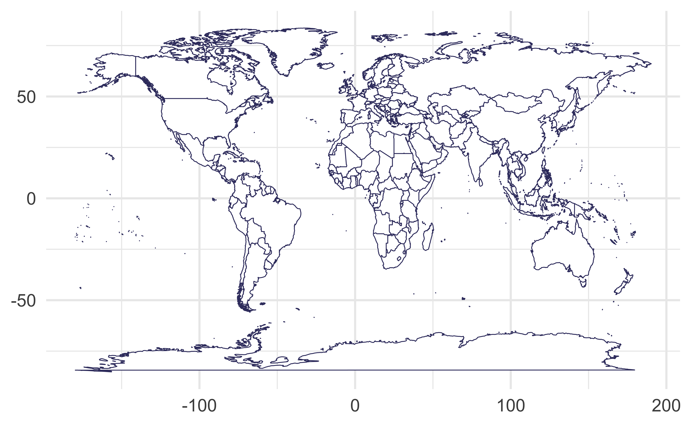
Mercator projection
Meridians are equally spaced and vertical, parallels are horizontal lines whose spacing increases the further we move away from the equator
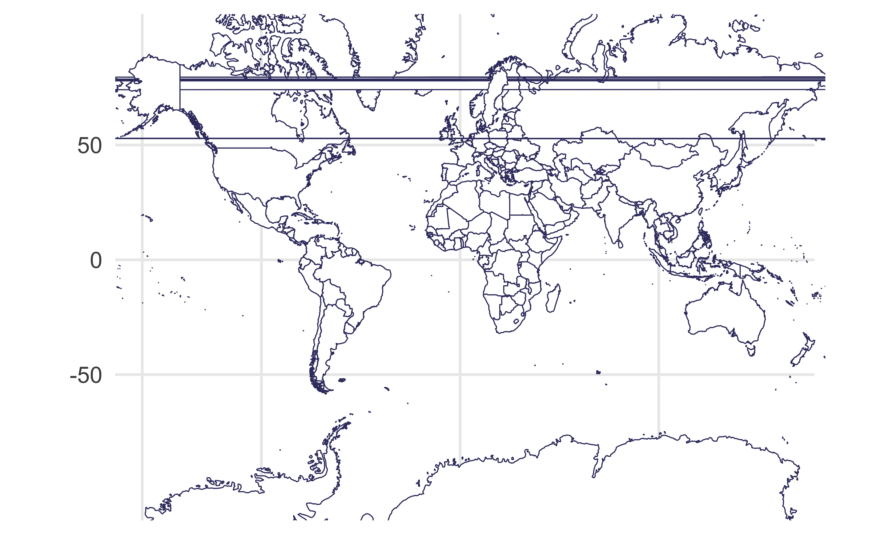
Mercator projection
without the weird straight lines through the earth!
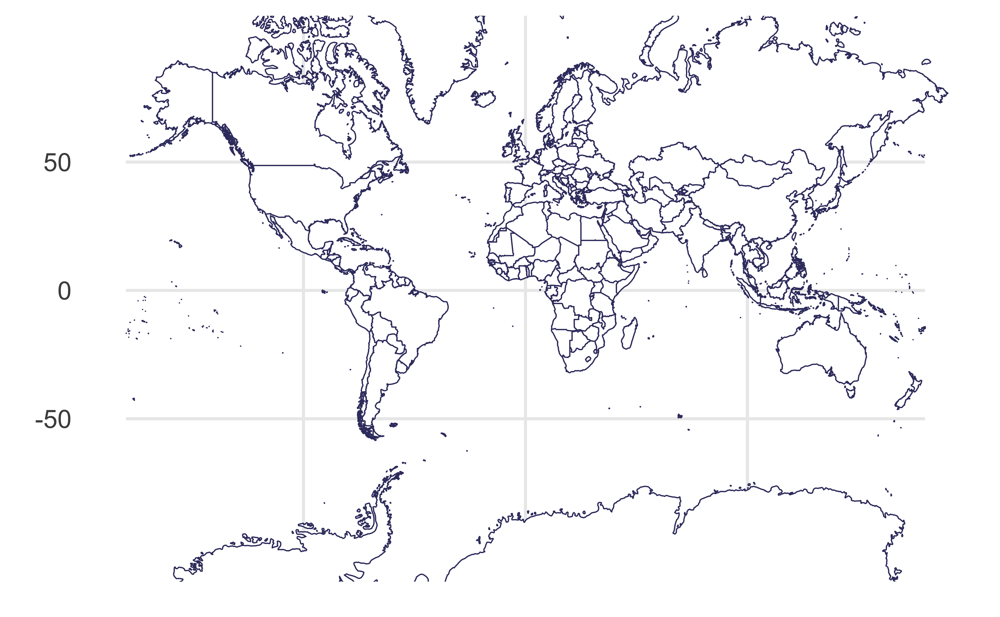
Sinusoidal projection
Parallels are equally spaced
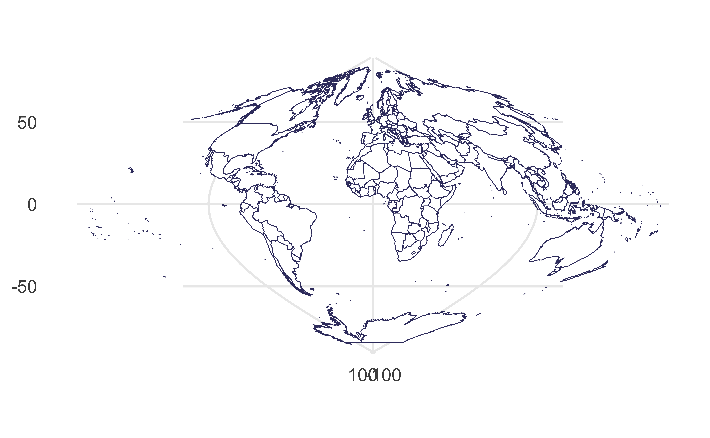
Orthographic projection
Viewed from infinity
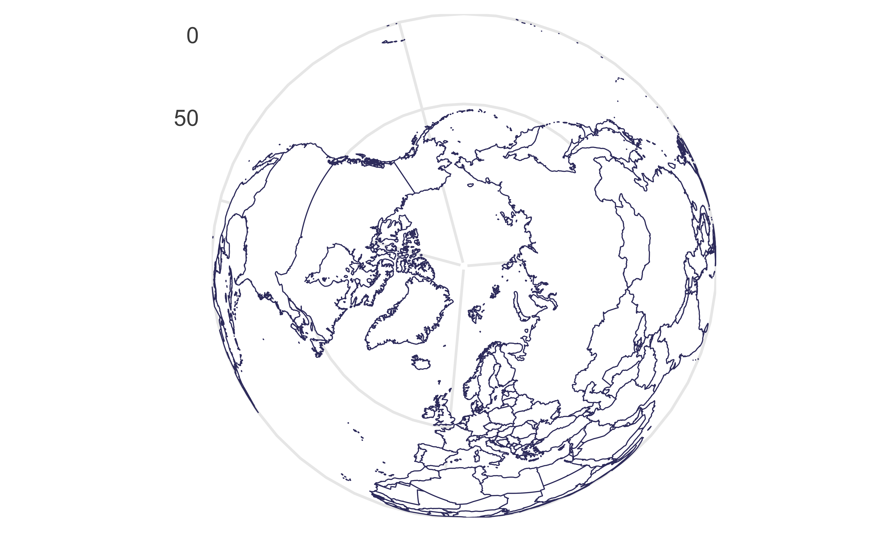
Mollweide projection
Equator is represented as a straight horizontal line perpendicular to a central meridian that is one-half the equator’s length, trades accuracy of angle and shape for accuracy of proportions in area
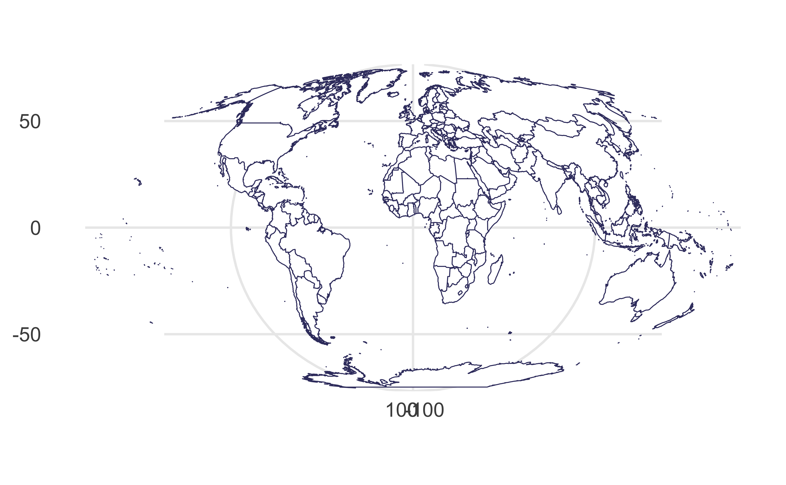
Visualizing distances
Draw a line between Istanbul and Los Angeles.
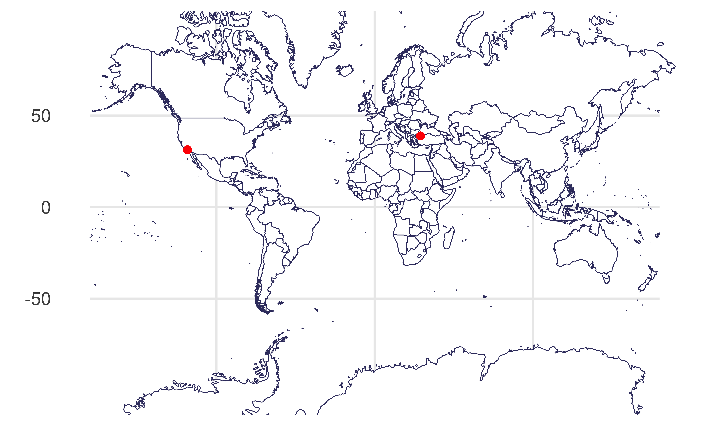
Visualizing distances
As if the earth is flat:
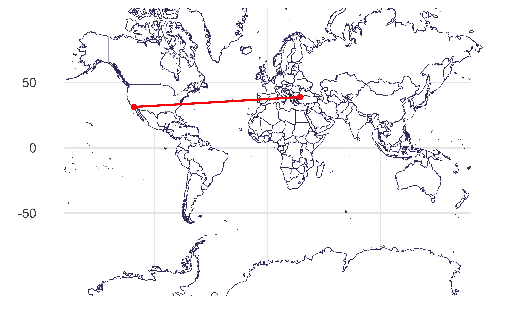
Visualizing distances
Based on a spherical model of the earth:
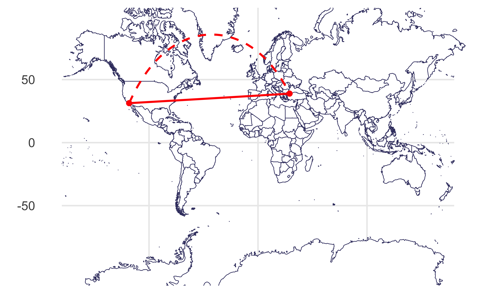
Intermediate points on the great circle
Intermediate points on the great circle
Plotting both distances
world_map +
geom_point(
data = cities,
aes(x = long, y = lat, group = NULL),
size = 2,
color = "red"
) +
geom_line(
data = cities,
aes(x = long, y = lat, group = NULL),
linewidth = 1,
color = "red"
) +
geom_line(
data = gc,
aes(x = lon, y = lat, group = NULL),
linewidth = 1,
color = "red",
linetype = "dashed"
) +
coord_map(projection = "mercator", xlim = c(-180, 180))Plotting both distances

Another distance between two points
How long does it take to fly from the Western most point in the US to the Eastern most point? Guess.
Dateline
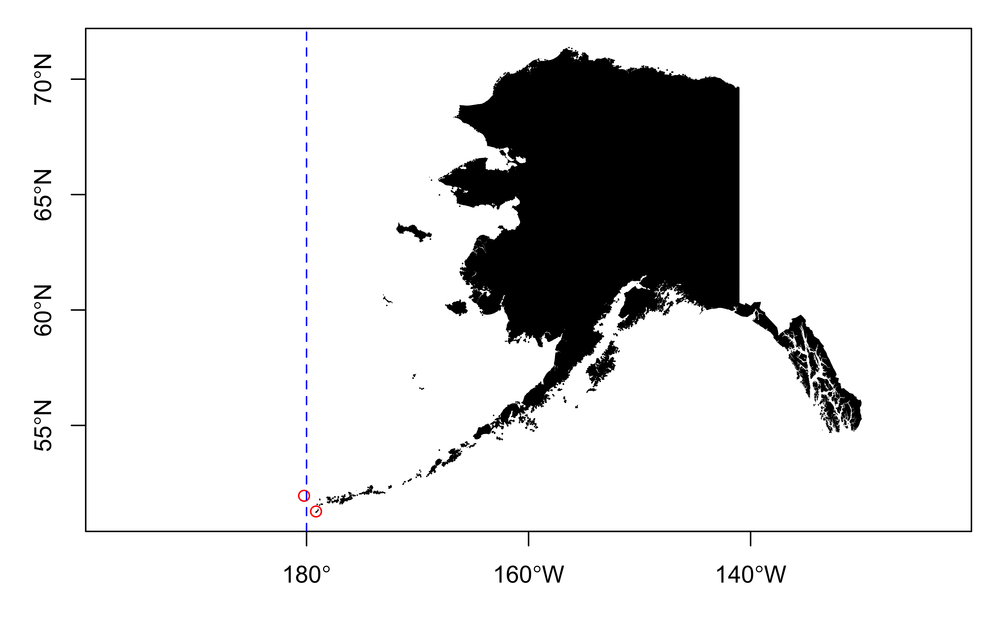
Geospatial data in the real world:
Freedom index
Freedom index
Since 1973, Freedom House has assessed the condition of political rights and civil liberties around the world.
It is used on a regular basis by policymakers, journalists, academics, activists, and many others.
Bias warning
“Freedom Index” from any source have potential bias and is prone to miscalculations. While the index appears to cover many social issues including freedom of religion, expression, etc. this data (like any data) should be approached with skepticism. Quantifying complex issues like these is difficult and the process can oversimplify difficult to record/measure political nuances.
Data
# A tibble: 195 × 4
country pr cl status
<chr> <dbl> <dbl> <chr>
1 Afghanistan 7 7 NF
2 Albania 3 3 PF
3 Algeria 6 5 NF
4 Andorra 1 1 F
5 Angola 6 5 NF
6 Antigua and Barbuda 2 2 F
7 Argentina 2 2 F
8 Armenia 4 4 PF
9 Australia 1 1 F
10 Austria 1 1 F
# ℹ 185 more rowspr: Political rights ratingcl: Civil liberties ratingstatus: The average of each pair of ratings on political rights and civil liberties determines the overall status of F (Free, 1.0 - 2.5), PF (Partly Free, 3.0 - 5.0), or NF (Not Free, 5.5 - 7.0)
Improve
The following visualization shows the distribution civil liberties ratings (1 - greatest degree of freedom to 7 - smallest degree of freedom). This is, undoubtedly, not the best visualization we can make of these data. How can we improve it?
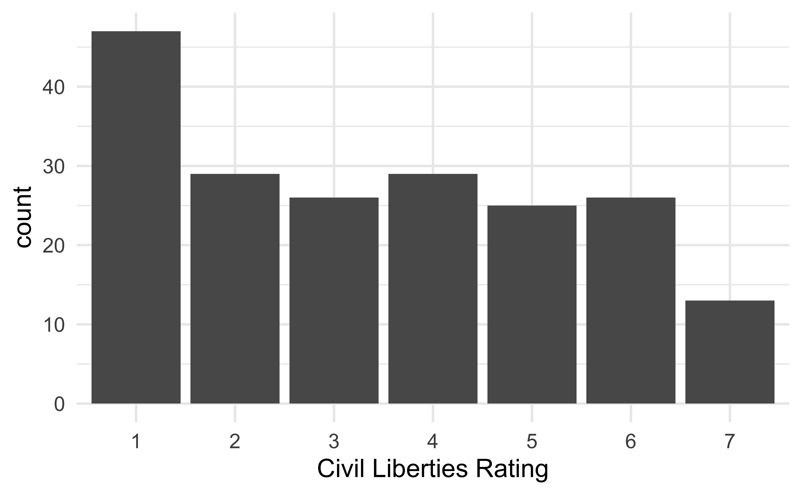
Mapping the freedom data
- Obtain country boundaries and store as a data frame
- Join the freedom and country boundaries data frames
- Plot the country boundaries, and fill by freedom scores
map_data()
The map_data() function easily turns data from the maps package in to a data frame suitable for plotting with ggplot2:
# A tibble: 99,338 × 6
long lat group order region subregion
<dbl> <dbl> <dbl> <int> <chr> <chr>
1 -69.9 12.5 1 1 Aruba <NA>
2 -69.9 12.4 1 2 Aruba <NA>
3 -69.9 12.4 1 3 Aruba <NA>
4 -70.0 12.5 1 4 Aruba <NA>
5 -70.1 12.5 1 5 Aruba <NA>
6 -70.1 12.6 1 6 Aruba <NA>
7 -70.0 12.6 1 7 Aruba <NA>
8 -70.0 12.6 1 8 Aruba <NA>
9 -69.9 12.5 1 9 Aruba <NA>
10 -69.9 12.5 1 10 Aruba <NA>
# ℹ 99,328 more rowsMapping the world
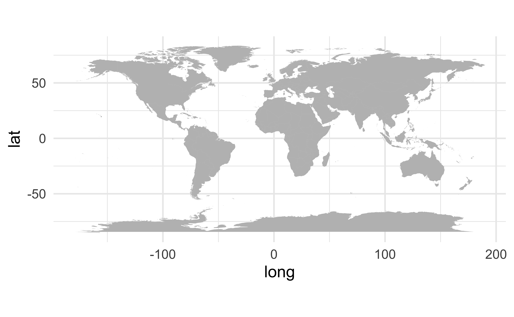
Freedom and world map
Join freedom and world map
Rows: 82,198
Columns: 9
$ country <chr> "Afghanistan", "Afghanistan", "Afghanistan", "Afghanistan", …
$ pr <dbl> 7, 7, 7, 7, 7, 7, 7, 7, 7, 7, 7, 7, 7, 7, 7, 7, 7, 7, 7, 7, …
$ cl <dbl> 7, 7, 7, 7, 7, 7, 7, 7, 7, 7, 7, 7, 7, 7, 7, 7, 7, 7, 7, 7, …
$ status <chr> "NF", "NF", "NF", "NF", "NF", "NF", "NF", "NF", "NF", "NF", …
$ long <dbl> 74.89131, 74.84023, 74.76738, 74.73896, 74.72666, 74.66895, …
$ lat <dbl> 37.23164, 37.22505, 37.24917, 37.28564, 37.29072, 37.26670, …
$ group <dbl> 2, 2, 2, 2, 2, 2, 2, 2, 2, 2, 2, 2, 2, 2, 2, 2, 2, 2, 2, 2, …
$ order <int> 12, 13, 14, 15, 16, 17, 18, 19, 20, 21, 22, 23, 24, 25, 26, …
$ subregion <chr> NA, NA, NA, NA, NA, NA, NA, NA, NA, NA, NA, NA, NA, NA, NA, …Mapping freedom
What is missing/misleading about the following map?
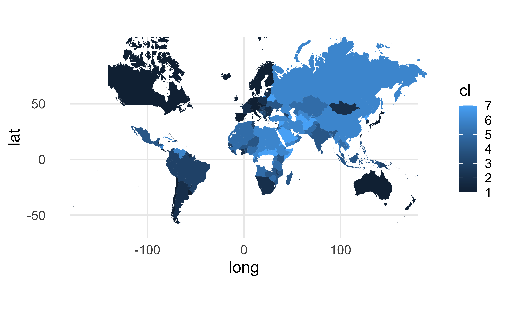
Missing countries
# A tibble: 14 × 1
country
<chr>
1 Antigua and Barbuda
2 Cabo Verde
3 Congo (Brazzaville)
4 Congo (Kinshasa)
5 Cote d'Ivoire
6 Eswatini
7 St. Kitts and Nevis
8 St. Lucia
9 St. Vincent and the Grenadines
10 The Gambia
11 Trinidad and Tobago
12 Tuvalu
13 United Kingdom
14 United States Data cleanup - freedom
freedom_updated <- freedom |>
mutate(
country = case_when(
country == "Cabo Verde" ~ "Cape Verde",
country == "Congo (Brazzaville)" ~ "Republic of Congo",
country == "Congo (Kinshasa)" ~ "Democratic Republic of the Congo",
country == "Cote d'Ivoire" ~ "Ivory Coast",
country == "St. Lucia" ~ "Saint Lucia",
country == "The Gambia" ~ "Gambia",
country == "United Kingdom" ~ "UK",
country == "United States" ~ "USA",
.default = country
)
)Data cleanup - world_map
world_map_updated <- world_map |>
mutate(
region = case_when(
region == "Antigua" ~ "Antigua and Barbuda",
region == "Barbuda" ~ "Antigua and Barbuda",
region == "Saint Kitts" ~ "St. Kitts and Nevis",
region == "Nevis" ~ "St. Kitts and Nevis",
region == "Saint Vincent" ~ "St. Vincent and the Grenadines",
region == "Grenadines" ~ "St. Vincent and the Grenadines",
region == "Trinidad" ~ "Trinidad and Tobago",
region == "Tobago" ~ "Trinidad and Tobago",
region == "Swaziland" ~ "Eswatini",
.default = region
)
)Check again
# A tibble: 1 × 1
country
<chr>
1 Tuvalu Tuvalu, formerly known as the Ellice Islands, is an island country and microstate in the Polynesian subregion of Oceania in the Pacific Ocean. Its islands are situated about midway between Hawaii and Australia. Tuvalu is composed of three reef islands and six atolls.
Let’s map!
Recreate the following visualization in ae-11.

Highlights from livecoding
When working through non-matching unique identifiers in a join, you might need to clean the data in both data frames being merged, depending on the context
Two ways to surface polygons with
NAs:left_join()map to data, layering with map at the bottom, data on topleft_join()data to map, setna.valueinscale_fill_*()to desired color
Use
na.value = "red"(or some other color that will stand out) to easily spot polygons withNAs
Geofaceting

Data
# A tibble: 612 × 4
name year resident_population percent_change_in_resident_p…¹
<chr> <dbl> <dbl> <dbl>
1 Alabama 1910 2138093 16.9
2 Alaska 1910 64356 1.2
3 Arizona 1910 204354 66.2
4 Arkansas 1910 1574449 20
5 California 1910 2377549 60.1
6 Colorado 1910 799024 48
7 Connecticut 1910 1114756 22.7
8 Delaware 1910 202322 9.5
9 District of Columbia 1910 331069 18.8
10 Florida 1910 752619 42.4
# ℹ 602 more rows
# ℹ abbreviated name: ¹percent_change_in_resident_populationTrend
state_pops_trend <- state_pops |>
nest(data = -name) |>
mutate(
fit = purrr::map(
data,
~ lm(percent_change_in_resident_population ~ year, data = .x)
),
tidy_out = purrr::map(fit, broom::tidy)
) |>
unnest(tidy_out) |>
filter(term == "year") |>
mutate(
trend = if_else(
estimate > 0,
"Overall increasing trend",
"Overall decreasing trend"
)
) |>
select(name, data, trend) |>
unnest(data)# A tibble: 612 × 5
name year resident_population percent_change_in_resident_population trend
<chr> <dbl> <dbl> <dbl> <chr>
1 Alabama 1910 2138093 16.9 Over…
2 Alabama 1920 2348174 9.8 Over…
3 Alabama 1930 2646248 12.7 Over…
4 Alabama 1940 2832961 7.1 Over…
5 Alabama 1950 3061743 8.1 Over…
6 Alabama 1960 3266740 6.7 Over…
7 Alabama 1970 3444165 5.4 Over…
8 Alabama 1980 3893888 13.1 Over…
9 Alabama 1990 4040587 3.8 Over…
10 Alabama 2000 4447100 10.1 Over…
# ℹ 602 more rowsFacet by state
Facet by state

Geofacet by state
Using geofacet::facet_geo():
Geofacet by state

Geofacet by state, with improvements
ggplot(
state_pops_trend,
aes(
x = year,
y = percent_change_in_resident_population,
group = name,
fill = trend
)
) +
geom_area() +
facet_geo(~name) +
scale_y_continuous(
labels = label_percent(scale = 1)
) +
scale_x_continuous(
breaks = seq(1910, 2020, 40),
labels = ~ paste0("'", sprintf("%02d", .x %% 100))
) +
scale_fill_manual(
name = NULL,
values = c(
"Overall decreasing trend" = "#E76F51",
"Overall increasing trend" = "#264653"
)
) +
labs(
x = NULL,
y = NULL,
title = "Percent change in resident population",
caption = "Source: US Census"
) +
theme_bw() +
theme(
strip.text.x = element_text(size = 7),
axis.text = element_text(size = 8),
legend.position = c(0.1, 0.97),
panel.grid.minor.y = element_blank()
)Geofacet by state, with improvements